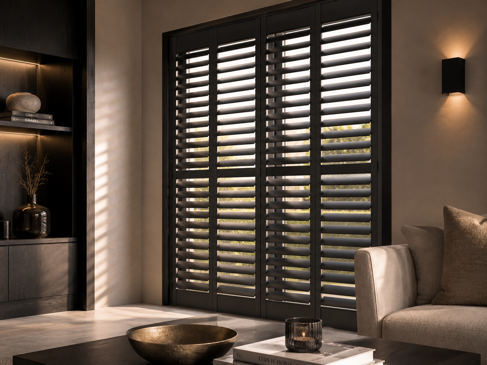

Waarom kiezen voor shutters
Shutters geven uw interieur een tijdloze, verzorgde uitstraling en bieden tegelijk volledige controle: van volledig open tot volledig gesloten, of alles daartussenin.
Shutters op maat
Tijdloze lamellen shutters die licht en privacy naar wens regelen. Op maat gemaakt en op aanvraag verkrijgbaar — wij bespreken de mogelijkheden en de prijs graag persoonlijk met u.

Alles over shutters
Shutters combineren een elegante uitstraling met volledige controle over licht en privacy. Hieronder leest u alles over onze shutters, van materiaal tot montage.
Shutters geven uw interieur een tijdloze, verzorgde uitstraling en bieden tegelijk volledige controle: van volledig open tot volledig gesloten, of alles daartussenin.
Van tijdloos wit tot warme houttinten, wij stemmen de afwerking af op uw interieur.
Leverbaar in hout, voor een warme en authentieke uitstraling, of in kunststof, voor extra vocht- en kleurbestendigheid.
Onze monteur meet uw kozijn nauwkeurig in en monteert het frame strak in of op de dagopening, waarna de panelen op maat worden geplaatst.
Shutters vragen weinig onderhoud: regelmatig afnemen met een droge of licht vochtige doek is voldoende om ze jarenlang mooi te houden.
Dankzij hoogwaardig materiaal en vakkundige montage gaan shutters van LOUA vele jaren mee en behouden ze hun tijdloze uitstraling.
Waarom LOUA
Wij denken met u mee over materiaal, kleur en afwerking, zonder verkooppraatje.
Wij kennen elk type ruimte en weten precies hoe shutters er strak en duurzaam in passen.
Onze monteurs werken secuur, zodat uw shutters naadloos aansluiten en jarenlang meegaan.
Ook interessant


Extra mogelijkheden
Deze wensen kunt u eenvoudig bespreken bij uw aanvraag.
Speciaal geschikt voor badkamer of andere vochtige ruimtes, zonder in te leveren op uitstraling.
Bespreken bij aanvraag →Kies voor de warmte van echt hout of een onderhoudsvriendelijke houtlook-afwerking.
Bespreken bij aanvraag →Ook voor brede schuifpuien en openslaande deuren stellen wij een passende oplossing samen.
Bespreken bij aanvraag →Laat in één keer meerdere ruimtes voorzien van shutters, wij stemmen de planning en het bezoek hierop af.
Gecombineerde aanvraag doen →Veelgestelde vragen
Shutters zijn maatwerk en op aanvraag verkrijgbaar. De prijs hangt sterk af van de afmetingen, het materiaal en de gewenste afwerking, daarom stellen wij deze altijd persoonlijk vast na een gratis inmeetafspraak.
Onze shutters zijn leverbaar in hout, voor een warme en authentieke uitstraling, of in kunststof, voor extra vocht- en kleurbestendigheid. Wij adviseren u graag welk materiaal het beste bij uw ruimte past.
Ja, met een vochtbestendige kunststof uitvoering zijn shutters uitstekend geschikt voor badkamers en andere vochtige ruimtes.
De lamellen zijn traploos verstelbaar, zodat u precies kunt bepalen hoeveel licht en inkijk u toelaat, zonder de shutters volledig te hoeven sluiten.
Onze monteur meet uw kozijn nauwkeurig in en monteert het frame strak in of op de dagopening, waarna de panelen op maat worden geplaatst.
Shutters zijn leverbaar in een ruime keuze aan kleuren en afwerkingen, van tijdloos wit tot warme houttinten. Wij bespreken de mogelijkheden graag tijdens het inmeten.
Shutters vragen weinig onderhoud: regelmatig afnemen met een droge of licht vochtige doek is voldoende om ze jarenlang mooi te houden.
Dankzij hoogwaardig materiaal en vakkundige montage gaan shutters van LOUA vele jaren mee en behouden ze hun tijdloze uitstraling.
Na uw aanvraag nemen wij binnen één werkdag contact met u op om een gratis inmeetafspraak in te plannen en de mogelijkheden persoonlijk te bespreken.